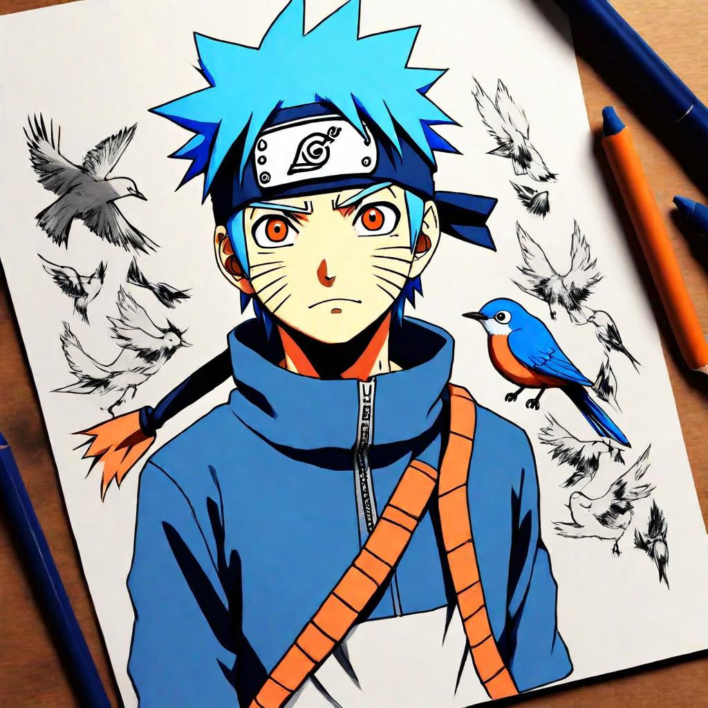

Ikimono Gakari - Blue Bird | Lyrics Meaning and Translation | Sentence for Sentence
Introduction
"Blue Bird" by Ikimono Gakari is one of the most beloved opening themes from the anime series Naruto Shippuden. The song's soaring melody and evocative lyrics capture the essence of freedom, aspiration, and the relentless pursuit of one's dreams. Ikimono Gakari, a popular Japanese pop rock band, brings their signature sound and heartfelt emotion to this track, making it a memorable and iconic song for fans.
In this article, we will explore the lyrics of "Blue Bird" sentence by sentence, providing the original Japanese text, Romaji, and English translation. We will also delve into the deeper meaning behind each line, revealing how the song's themes resonate with the journey of the characters in Naruto Shippuden.
Background of the Song
Release Details
"Blue Bird" by Ikimono Gakari was released in 2008 and served as the third opening theme for Naruto Shippuden. The song played from episodes 54 to 77, accompanying key moments in the series and adding emotional depth to the storyline. Its uplifting message and catchy melody made it an instant hit among fans.
Inspiration and Creation
Ikimono Gakari is known for their expressive lyrics and melodic compositions. "Blue Bird" reflects themes of longing, determination, and the desire to break free from constraints, mirroring the struggles and aspirations of Naruto and his friends. The band's ability to blend emotional lyrics with a captivating tune has made this song a favorite among listeners.
Sentence-by-Sentence Lyrics Breakdown
Verse 1
Sentence 1:
Original Japanese:
飛翔(はばた)いたら
Romaji:
Habataitara
English Translation:
If I were to flap my wings
Meaning and Interpretation: This line sets the stage with the imagery of taking flight, symbolizing the desire for freedom and the pursuit of one's dreams.
Sentence 2:
Original Japanese:
戻らないと言って
Romaji:
Modoranai to itte
English Translation:
Saying I won't return
Meaning and Interpretation: The speaker expresses a determination to move forward and not look back, reflecting a commitment to their journey.
Sentence 3:
Original Japanese:
目指したのは
Romaji:
Mezashita no wa
English Translation:
What I aimed for
Meaning and Interpretation: This line highlights the focus and aspiration towards a specific goal or dream.
Sentence 4:
Original Japanese:
蒼い 蒼い あの空
Romaji:
Aoi aoi ano sora
English Translation:
That blue, blue sky
Meaning and Interpretation: The repeated reference to the blue sky symbolizes vast possibilities and the beauty of aspirations.
Chorus
Sentence 1:
Original Japanese:
"悲しみ"はまだ覚えられず
Romaji:
"Kanashimi" wa mada oboerarezu
English Translation:
I still can't remember "sadness"
Meaning and Interpretation: This line suggests a state of innocence or a focus on positive emotions over negative ones.
Sentence 2:
Original Japanese:
"切なさ"は今つかみはじめた
Romaji:
"Setsunasa" wa ima tsukami hajimeta
English Translation:
I am just beginning to grasp "sorrow"
Meaning and Interpretation: The speaker acknowledges the onset of more complex emotions, reflecting growth and experience.
Sentence 3:
Original Japanese:
あなたへと抱く この感情も
Romaji:
Anata e to idaku kono kanjou mo
English Translation:
These feelings I have for you
Meaning and Interpretation: Expresses personal and deep emotions directed towards someone important.
Sentence 4:
Original Japanese:
今"言葉"に変わっていく
Romaji:
Ima "kotoba" ni kawatte iku
English Translation:
Are now turning into "words"
Meaning and Interpretation: Highlights the transformation of emotions into communicable thoughts, emphasizing the power of expression.
Verse 2
Sentence 1:
Original Japanese:
未知なる世界の
Romaji:
Michinaru sekai no
English Translation:
Of an unknown world
Meaning and Interpretation: This line evokes the idea of exploring new and uncharted territories, symbolizing the adventure and discovery in Naruto's journey.
Sentence 2:
Original Japanese:
遊迷(ゆめ)から目覚めて
Romaji:
Yume kara mezamete
English Translation:
Awakening from a dream
Meaning and Interpretation: Suggests a transition from fantasy to reality, reflecting the awakening of true potential.
Sentence 3:
Original Japanese:
この羽根を広げ 飛び立つ
Romaji:
Kono hane wo hiroge tobitatsu
English Translation:
Spreading these wings and taking flight
Meaning and Interpretation: Reinforces the theme of taking action and embarking on a journey towards one's goals.
Bridge and Outro
Sentence 1:
Original Japanese:
愛想尽きたような音で
Romaji:
Aiso tsukita you na oto de
English Translation:
With a sound that seems to have exhausted all affection
Meaning and Interpretation: Conveys a sense of finality and the end of a chapter, mirroring the characters' struggles and resolutions.
Sentence 2:
Original Japanese:
錆びれた古い窓は壊れた
Romaji:
Sabireta furui mado wa kowareta
English Translation:
The old, rusty window broke
Meaning and Interpretation: Symbolizes breaking free from old limitations and the start of something new.
Sentence 3:
Original Japanese:
見飽きたカゴは ほら捨てていく
Romaji:
Miakita kago wa hora suteteiku
English Translation:
Look, I'm discarding the cage I'm tired of seeing
Meaning and Interpretation: Reflects the decision to leave behind constraints and pursue freedom.
Themes and Messages
Major Themes in the Song
- Freedom and Aspiration: The lyrics emphasize the desire to break free and achieve one's dreams.
- Emotional Growth: Highlights the journey of understanding and expressing complex emotions.
- Determination and Resilience: Encourages moving forward and not looking back, despite challenges.
Resonance with Listeners
The themes of "Blue Bird" resonate deeply with listeners, especially fans of Naruto Shippuden, as they reflect the core values of the series. The song's powerful message and uplifting melody inspire determination and hope, much like Naruto himself.
Translation Accuracy and Interpretation
Challenges of Translating Japanese to English
Translating Japanese lyrics to English involves navigating nuances and cultural differences. Certain phrases and emotions may not have direct equivalents in English, requiring interpretive translation to maintain the song's original intent and impact.
Comparison with Other Translations
- Official vs. Fan Translations: Official translations often aim for accuracy and readability, while fan translations may capture more of the song's emotional and cultural context.
- Interpretation Variations: Different translations can offer various perspectives on the song's meaning, enriching the understanding of its themes.
Connection to Naruto Shippuden
Fit Within the Anime
"Blue Bird" is a perfect fit for Naruto Shippuden, capturing the essence of Naruto's journey, filled with dreams, determination, and the struggles of a young ninja. The song's melodic pop rock style matches the dynamic and emotional nature of the anime.
Fan Reactions
Fans of Naruto Shippuden have embraced "Blue Bird" as an iconic opening theme, praising its motivational lyrics and memorable melody. The song is often associated with the pivotal moments in the series, making it a beloved anthem among fans.
Conclusion
In summary, "Blue Bird" by Ikimono Gakari is a powerful and uplifting opening theme that perfectly encapsulates the spirit of Naruto Shippuden. Its meaningful lyrics, soaring melody, and connection to the series' core themes of freedom, aspiration, and emotional growth make it an enduring favorite. By examining the song's lyrics sentence by sentence, we gain a deeper appreciation for its impact and the way it mirrors Naruto's journey. We invite you to share your thoughts and interpretations of "Blue Bird" in the comments, and reflect on how this iconic song has inspired you.
Comments